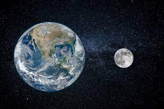

earth was a rock colasped 4.5 billion years ago
earth has a powerful magnetic force inside
A magnetosphere is that area of space, around a planet, that is controlled by the planet's magnetic field. The shape of the Earth's magnetosphere is the direct result of being blasted by solar wind. The solar wind compresses its sunward side to a distance of only 6 to 10 times the radius of the Earth.
Earth was molten for a period around 4.5 billion years ago due to constant bombardment from asteroids and other objects, and then melted again when the iron in the Earth sank down to form the planet's core.

The Moon is Earth's only natural satellite. It goes around the Earth at a distance of about 239,000 miles (385,000 kilometers).
